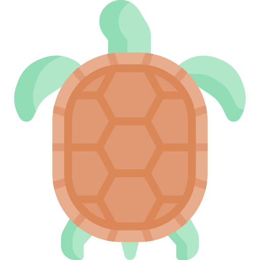
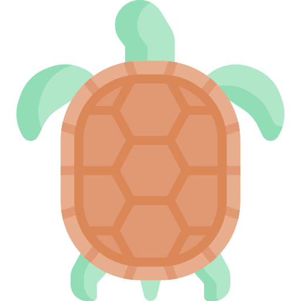
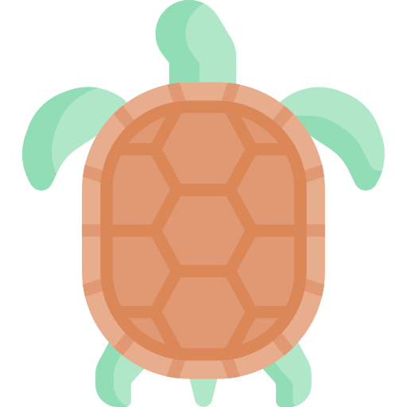
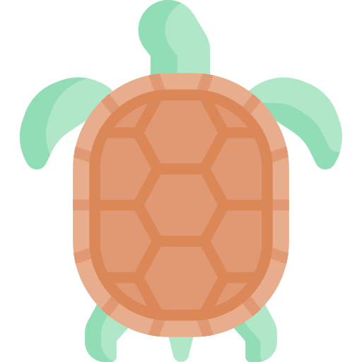
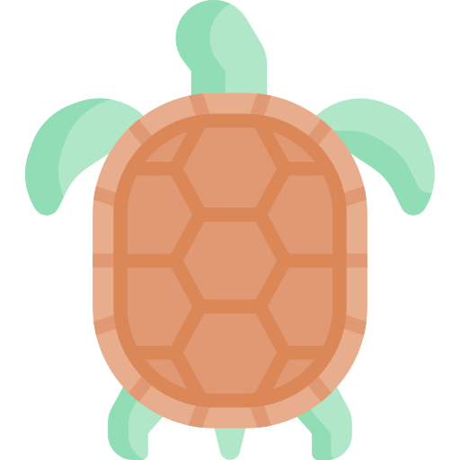

30일 챌린지
리뷰
병원 리뷰
제품 리뷰
통계
랭킹
통계
정보 수정
로그아웃

자가진단
현재 상태를 체크해보세요.
의자에 앉아있는 시간이 8시간 이상이다.
피곤할 때 가끔 두통이 발생한다.
자세가 구부정하다는 소리를 자주 듣는다.
잠을 자도 개운하지 않고 피곤하다.
목을 뒤로 젖힐 때, 통증이 있거나 뻐근한 느낌이 든다.
사진을 보면 언제나 목이 기울어있다.
자고 일어나면 목이 아프다.
컴퓨터를 하루 8시간 이상, 스마트폰을 하루 4시간 이상 사용한다.
하루종일 자도 피곤하다(만성피로).
지하철에서 스마트폰을 볼 떄 눈높이에 맞추지 않는다.
평소 목을 앞으로 내민 채 컴퓨터를 사용한다.
결과 확인하기
 

 
